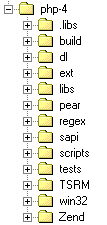

| ||||||
|
| ||||||
Глава 27. Строение Исходного Кода
- Содержание
- Соглашения по расширениям
- Макросы
- Работа с памятью
- Функции работы с файлами и директориями
- Работа со строками
- Сложные типы
|
Предварительные условия. Прежде чем работать с остальной частью этой главы, вы должны запросить чистые,
немодифицированные исходные деревья вашего любимого Web-сервера. Альтернативно вы можете использовать архивы исходников на CD-ROM, сопровождающим эту книгу. Все примеры в этой книге работают с архивами исходников с CD-ROM; мы не можем гарантировать это для каждой версии, полученной из Net. Однако, поскольку программное обеспечение Open Source разрабатывается очень быстро, велики шансы того, что версии на CD-ROM уже устарели и не имеют всей необходимой функциональности. Если вы не можете получить с соответствующих Web-сайтов официальные архивы для работы, поэкспериментируйте с архивами на CD-ROM. Убедитесь, что вы можете скомпилировать рабочее окружение PHP самостоятельно! |
Прежде чем начинать обсуждение кода, вы должны познакомиться с исходным деревом, чтобы быстро перемещаться по PHP-файлам. Это необходимо для реализации и отладки расширений.
После извлечения PHP-архива вы увидите структуру директорий, примерно как на Рисунке 9.2.
Рисунок 27-1. Рисунок 9.2. Структура основных директорий исходного дерева PHP.

В таблице описано содержимое большинства этих директорий.
| Директория | Содержимое |
|---|---|
| php-4 | Главные исходные файлы PHP и главные header-файлы; здесь вы найдёте все определения API РНР, макросов etc. (это важно). |
| ext | Хранилище динамических и встроенных модулей; по умолчанию это "официальные" модули PHP, которые интегрированы в главное исходное дерево. В PHP 4.0 можно компилировать эти стандартные расширения как динамически загружаемые модули (как минимум те, которые это поддерживают). |
| pear | Директория для хранения классов PHP. На момент написания она была всё ещё в стадии разработки, но здесь делается попытка создания чего-либо подобного CPAN для Perl. |
| sapi | Содержит код для различных абстрактных слоёв сервера. |
| TSRM | Местонахождение "Thread SafeResource Manager" (TSRM) для Zend и PHP. |
| Zend | Местонахождение файла Zend; здесь вы найдёте все определения Zend API, макросов etc. (это важно). |
Рассмотрение всех файлов, входящих в пакет PHP выходит за рамки этой главы. Однако вы должны хотя бы кратко просмотреть следующие файлы:
php.h, размещённый в главной директории PHP. Это файл содержит определения большинства макросов и API РНР.
zend.h, размещённый в главной директории Zend. Это файл содержит большинство макросов и определений Zend'а.
zend_API.h, также размещённый в директории Zend, который определяет API Zend'а.
Соглашения по расширениям
Zend построен с использованием определённых соглашений; чтобы исключить нарушение стандартов Zend, вы должны следовать правилам, описанным в следующих разделах.
|
| ||||||
|